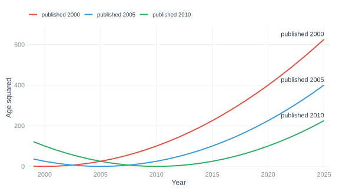
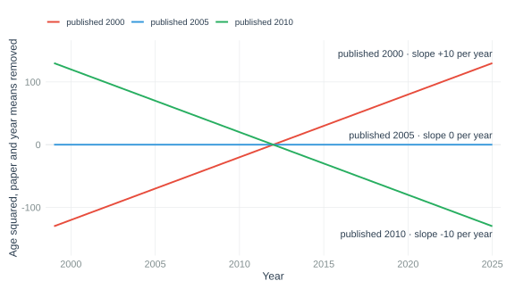
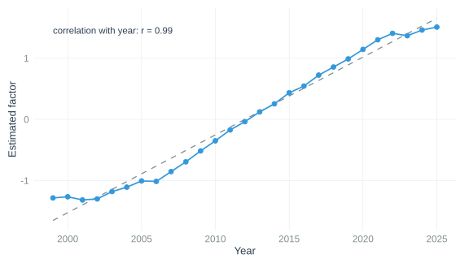
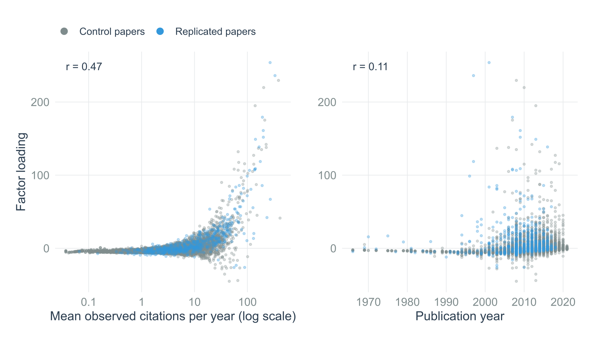

Why age² adds nothing the factor model does not already have
The point in three sentences. Once a model has paper fixed effects and year fixed effects, the only part of age² that is left is a straight-line time trend whose slope is set by the paper's publication year. The one-factor IFE term in our fect model is also a straight-line time trend with a paper-specific slope, because the estimated factor is almost exactly linear in calendar year. Two terms of the same shape compete for the same variation, so the age² coefficient is not pinned down, which is why it moved from −0.040 to −0.006 between the March and September fits while the ATT barely changed.
1. What age² is made of
Age is calendar year minus publication year. Squaring it gives three pieces:
age² = (year − pub)² = year² − 2 · year · pub + pub²
Figure 1 shows the raw age² curves for three imaginary papers published in 2000, 2005 and 2010. They are the same parabola, shifted along the time axis. The panel is drawn as balanced (every paper in every year, negative ages allowed) because that makes the algebra below easy to see; the conclusion does not depend on it, see the note at the end.

2. What the fixed effects take away
fect with force = "two-way" estimates a fixed effect for every paper and for every calendar year. A paper fixed effect absorbs anything that is constant within a paper; a year fixed effect absorbs anything that is constant within a year. Applied to the three pieces of age²:
year² − 2 · year · pub + pub²
year²is the same for every paper in a given year. The year effects absorb it.pub²is the same for a paper in every year. The paper effects absorb it.−2 · year · pubis a product of a paper constant and a time variable. Nothing absorbs it.
So, net of the fixed effects, age² is the term −2 · year · pub: a straight line in calendar time whose slope depends on when the paper was published. Figure 2 shows what is left of the three curves after subtracting paper means and year means. The parabolas become straight lines, and the slopes are ordered by publication year.

A consequence worth stating on its own: the quadratic was meant to capture the citation life-cycle, a rise followed by a decline. In a two-way fixed-effects model it cannot do that. The common curvature is absorbed; what survives is one trend term per paper, not a curve.
3. What the factor is doing
The IFE part of the model adds λi · ft: one common time factor ft, and a loading λi that is estimated freely for every paper. Cross-validation selected one factor. Figure 3 plots that estimated factor against calendar year for the September fit. It is very close to a straight line.

fit$factor, 1999–2025. Correlation with calendar year 0.99.Figure 4 shows what the loadings track. They follow how heavily cited a paper is (correlation 0.73 with mean citations per year, 0.47 against the log scale shown in the figure) and hardly at all its publication year (0.11). In words: the factor model has learned that well-cited papers gain citations faster than poorly cited ones, year on year, and it gives each paper its own slope on that shared linear trend.

4. Why the two terms collide
Put sections 2 and 3 side by side:
| Term | Shape after fixed effects | Slope per paper |
|---|---|---|
| age² × β | straight line in year | −2 β · pubi, fixed by the publication year |
| λi · ft, with ft ≈ linear | straight line in year | λi, estimated freely |
If the factor were exactly a straight line, any value of β could be undone by shifting every paper's loading by 2 β · pubi. The fitted values would be identical, so the data could not tell one β from another. The factor is not exactly linear, so β is technically identified, but only through the small curvature at the ends of Figure 3. That is a flat ridge in the likelihood: the estimate wanders between fits, its standard error is unreliable, and the optimiser has little to grip. The counterfactual predictions, on the other hand, are the same whichever way the variation is split, so the ATT is hardly affected.
The numbers behave exactly as this predicts:
| Fit | age² coefficient (SE) | ATT | Iterations to converge |
|---|---|---|---|
| March 2026, 101 treated | −0.040 (0.005) | −6.75 | – |
| September 2026, 591 treated | −0.006 (0.003) | −5.62 | 226 at tol = 1e-3 |
| September sample, age² dropped | – | −5.18 | 228 at tol = 1e-3 |
The coefficient changed by a factor of seven between two samples drawn from the same population, while the ATT moved by about 0.4 citations per year when the term was removed altogether. The near-identical iteration counts show that age² is not what makes the fits slow. The tolerance setting is: fect 2.4.5 defaults to tol = 1e-5, which never converged on this panel in over an hour, while tol = 1e-3 reproduces the saved ATT in 226 iterations and about five minutes.
5. What to do
Specification. The fect and ETWFE formulas in _06_fect_analysis.Rmd use SJR as the only covariate. The factor already provides a paper-specific linear trend, more flexibly than age² can. The preregistration lists age² as a covariate, so this is a documented deviation; the rationale is the algebra above, and the effect on the ATT is small and reportable. The saved model models/fit_citation_Scopus.rds was fitted with age² and reflects the preregistered formula until the next first-stage run.
In the ETWFE Poisson robustness check the same term does real damage, because etwfe interacts every covariate with all cohort-by-year treatment cells. There the estimate swings from +8% without age² to −25% with it.
Notes
Unbalanced panel. Our real panel starts each paper in its publication year, so the grid is not rectangular. The identity age² = year² − 2 · year · pub + pub² holds in every observed cell regardless, and the fixed effects still absorb the year² and pub² pieces exactly, because each is constant within the group its effect indexes. Balance only affects how the demeaning is computed, not what survives it.
A design point that follows from Figure 4. With a linear factor and level-proportional loadings, each treated paper's counterfactual is its own pre-replication growth line carried forward. The preregistered placebo test checks this directly by holding out the last three pre-replication years: on the 392 treated papers with enough history the forecast error is +0.3 citations per year (p = .82), so the extrapolation holds up to the replication. A trend reversal coinciding exactly with the replication year cannot be ruled out by any pre-period test; only a comparison with successfully replicated originals speaks to that.
References
- Liu, L., Wang, Y., & Xu, Y. (2024). A practical guide to counterfactual estimators for causal inference with time-series cross-sectional data. American Journal of Political Science, 68(1), 160–176. https://doi.org/10.1111/ajps.12723
- Wooldridge, J. M. (2023). Simple approaches to nonlinear difference-in-differences with panel data. The Econometrics Journal, 26(3), C31–C66. https://doi.org/10.1093/ectj/utad016